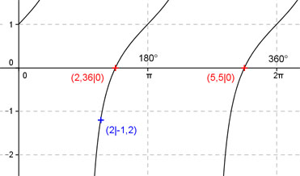

Aufgabe 193 Ergänzen Sie die Wertetabelle für x zwischen 0 und 2π: y = tan (x) + 1 x 2 2,36 oder 5,5 y -1,2 0 Periode = π ; tan x um 1 Einheit nach oben verschoben Berechnung der Nullstellen: hier auch Berechnung der x-Werte für y = f(x) = 0 f(x) = 0 eingesetzt, existiert zweimal, zwischen 0 und π bzw. 0° und 180° und zwischen π und 2π bzw. 180° und 360° (siehe Graph). tan (x) + 1 = 0 |-1 --> tan x = -1 --> x = arc tan (-1) = -0,785 = -π/4, liegt nicht im Bereich zwischen 0 und 2π --> x1 = π - π/4 = 2,36 x2 = π + 2,36 = 5,5 gerundet.  Funktionswert an einer Stelle x ermitteln: 2 * 180° x = 2 oder ---------- = 114,6° π f(2) = tan(2) + 1 = tan(114,6°) + 1 = -1,2 gerundet.